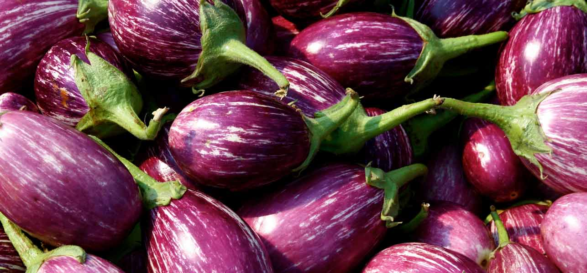

अगर आप भी उन्हीं लोगों में से एक है और बैंगन की सब्जी नहीं खाते हैं तो आज हम आपको अवगत करवाते हैं बैंगन के ऐसे गुणों से जिन्हें जानने के बाद आपकी गलतफहमी दूर हो जाएगी। वैसे बैंगन के रंग का प्रभाव भी उसके गुणों पर पड़ता है। विटामिन 'सी' की उपस्थिति बैंगन के छिलके के रंग पर निर्भर करती है। गहरे रंग के छिलके वाले बैंगन में अधिक विटामिन 'सी' रहता है जबकि हल्के रंग के छिलके वाले बैंगन में विटामिन 'सी'की मात्रा कम रहती है। वसा, प्रोटीन व कार्बोहाइड्रेट्स ये तीनों ही पोषक तत्व बैंगन में कम पाए जाते हैं।
100 ग्राम बैंगन में नीचे लिखे पोषक तत्व पाए जाते हैं प्रोटीन - 1.4 ग्राम वसा- 0.3 ग्राम कार्बोहाइड्रेट्स -4.0ग्राम कैल्शियम - 18 ग्राम फस्फोरस - 47 (मि. ग्राम) लौह तत्व - 0.38(मि.ग्राम) विटामिन सी - 12(मि.ग्राम) पोटेशियम - 20(मि.ग्राम) -मैग्नीशियम - 16(मि.ग्राम)।
कोलेस्ट्रॉल कंट्रोल करता है- बैंगन के सेवन से रक्त में बैंगन के सेवन से रक्त में कोलेस्ट्रॉल का स्तर गिरता है। इस तरह के प्रभाव का प्रमुख कारण है। बैंगन में पोटेशियम व मैंगनीशियम की अधिकता। बैंगन की पत्तियों के रस का सेवन करने से भी रक्त में कोलेस्ट्रॉल का स्तर कम किया जा सकता है।इससे रक्त संचार सही रहता है।
रूखी त्वचा के लिए बैंगन- बैंगन स्किन को मॉइश्चर प्रदान करता है। इसीलिए अगर आपकी स्किन ड्राय या बाल ड्राय हो तो बैंगन जरूर खाएं। उच्च रक्तचाप के रोगियों के लिये यही कारण है कि बैंगन उपयोगी माना जाता है।इसी कारण यह कोलेस्ट्रॉल के स्तर को कम करता है और बैंगन का सेवन करने वालों को दिल की बीमारियों से बचाता है।
दांत के दर्द में- बैंगन का रस दांत के दर्द में लाभदायक प्रभाव दिखलाता है। बैंगन की पुल्टिस बनाकर फोड़ों पर बांधने से फोड़े जल्दी पक जाते हैं। अस्थमा के उपचार के लिये बैंगन की जड़ें प्रयुक्त की जाती हैं।बैंगन में फाइबर अधिक मात्रा में पाए जाते हैं इसीलिए इसे सेवन करने वालों को कब्ज नहीं होती है।